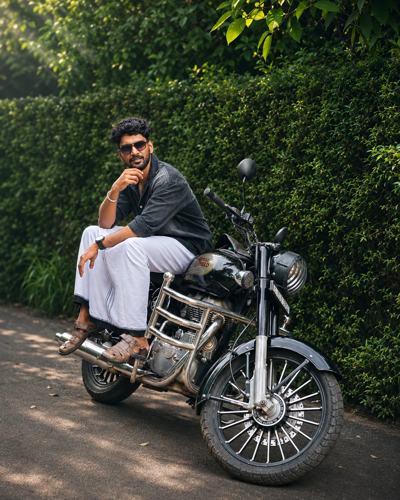

AI Developer / Python & AI Trainer
Linnk Academy India / Linnk GroupBuilding and supporting AI-integrated web projects, delivering Python and Django sessions, mentoring internships and creating practical learning material.
ABOUT / MY STORY
I'm Aswin R Sudhakar—a full-stack and AI developer who enjoys building reliable applications and sharing what I learn.
View my résumé ↗
01 / THE SHORT VERSION
My work sits between backend engineering, product thinking and applied AI. I work primarily with Python and Django, combining dependable server-side systems with clear, approachable web experiences.
I’ve developed learning-management workflows, explored coordinated service operations, and built tools that support data analysis and smarter learning experiences.
I’m also a Python and AI trainer. Teaching challenges me to explain technical decisions clearly—and makes me a more deliberate engineer.
02 / EXPERIENCE
Building and supporting AI-integrated web projects, delivering Python and Django sessions, mentoring internships and creating practical learning material.
Worked on Python-based ML workflows including preprocessing, model development, prediction pipelines and evaluation practices.
Facilitated a five-hour faculty development session introducing practical ways to use AI tools in teaching, learning material preparation, and classroom tasks.
03 / MY TOOLKIT
HTML · CSS · JavaScript · React · Responsive UI
Python · Django · Django REST Framework · REST APIs · Auth · SQL
Pandas · NumPy · scikit-learn · Streamlit · OpenCV
Git · GitHub · Automated tests · Debugging · Technical documentation · Training

04 / OUTSIDE THE IDE
Curiosity doesn't stop when the laptop closes. I enjoy discovering new places, observing how things work, and bringing fresh perspective back to the problems I build for.
Read the journal ↗